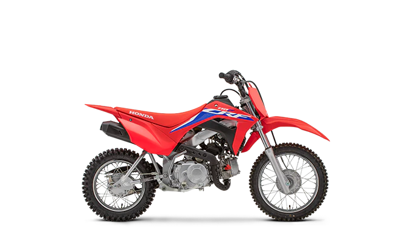

The CRF110F features a Keihin electronic fuel-injection system that’s tuned for linear power delivery and precise throttle response. The four-speed, clutch-less transmission makes for easy take-offs and shifting that quickly become comfortable for every rider. 97mm of rear-suspension travel and a extra seat-foam thickness (without increasing overall seat height) mean comfort whether sitting or standing. In true Honda style, the CRF110F delivers legendary build quality and reliability, so the bike dependably fires up every time the starter button is pressed and does not stop until the tank runs dry—and when that moment is looming, the FI system provides a low-fuel warning light.
